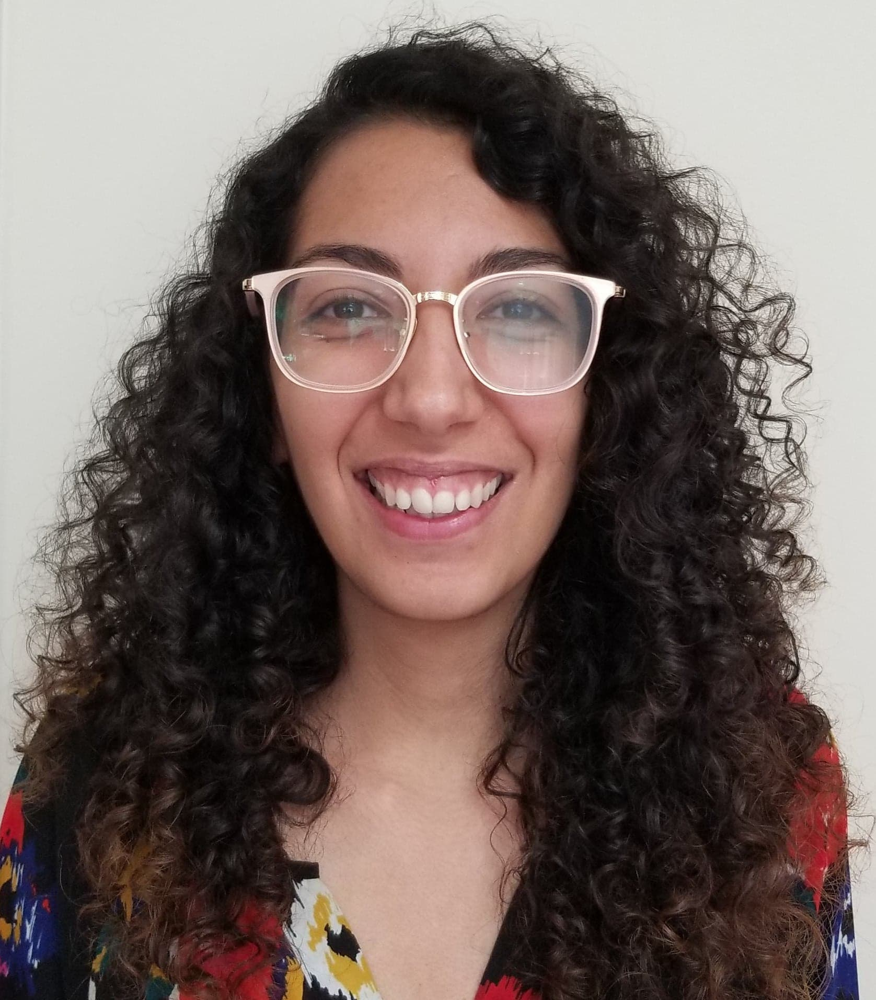

Talie Massachi

About me
I'm a fourth year PhD student in computer science at Brown University. I work in the Brown HCI Lab, advised by Prof. Jeff Huang. My research focuses on understanding, building, and maintaining social support networks over social media. Previously, I worked as a software engineer at constructor.io. I graduated from Brandeis University in 2018, with a degree in Computer Science and Psychology.
Research Projects
Chime: a social mood-tracking app that encourages social support through emoji-only communication.
Sochiatrist: a social data extractor used to predict signals of mental health from social messaging data.
Publications
* Denotes equal contribution
Pearl: A Technology Probe for Machine-Assisted Reflection on Personal Data
Bridging the Social Distance: Offline to Online Social Support during the COVID-19 Pandemic
Leveraging Mobile-Based Sensors for Clinical Research to Obtain Activity and Health Measures for Disease Monitoring, Prevention, and Treatment
Sochiatrist: Signals of Affect in Messaging Data
Racing Heart and Sweaty Palms
Other Fun Things
Ever wondered what a post might look like in emojis?

Looking for the Brown University Spring 2023 CSCI 0130 homepage?
Click Here!
(Graphic by Caitlin Rowlings)
M3ap, a mandala-inspired music visualizer. A project from Hack @ Brown 2017.
I made this with
Ryan Marcus and
Sofiya Semenova.